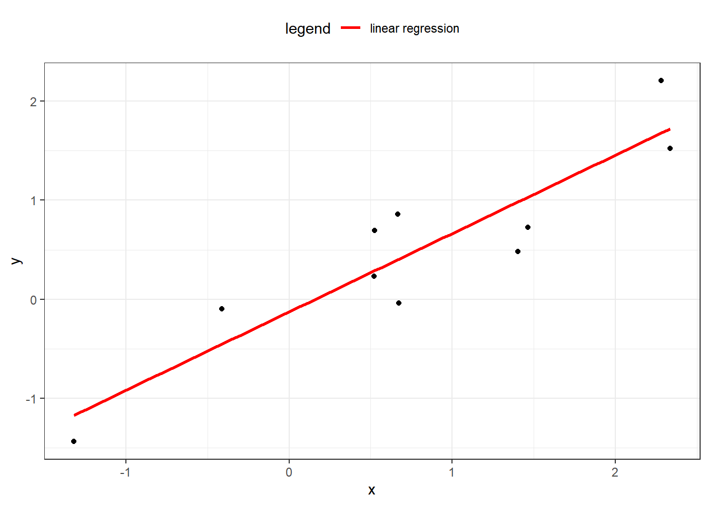

6 Linear Models
6.1 Introduction
The number of observations will be denoted by \(n\). When we refer to the size of a data set, we are referring to \(n\). We use \(p\) to refer the number of input variables used. The word “variables” is synonymous with “features”. For example, in the health_insurance data, the variables are age, sex, bmi, children, smoker and region. These 7 variables mean that \(p = 7\). The data is collected from 1,338 patients, which means that \(n = 1,338\).
Scalar numbers are denoted by ordinary variables (i.e., \(x = 2\), \(z = 4\)), and vectors are denoted by bold-faced letters
\[\mathbf{a} = \begin{pmatrix} a_1 \\ a_2 \\ a_3 \end{pmatrix}\]
We use \(\mathbf{y}\) to denote the target variable. This is the variable which we are trying to predict. This can be either a whole number, in which case we are performing regression, or a category, in which case we are performing classification. In the health insurance example, y = charges, which are the annual health care costs for a patient.
Both \(n\) and \(p\) are important because they tell us what types of models are likely to work well, and which methods are likely to fail. For the PA exam, we will be dealing with small \(n\) (<100,000) due to the limitations of the Prometric computers. We will use a small \(p\) (< 20) in order to make the data sets easier to interpret.
We organize these variables into matrices. Take an example with \(p\) = 2 columns and 3 observations. The matrix is said to be \(3 \times 2\) (read as “2-by-3”) matrix.
\[ \mathbf{X} = \begin{pmatrix}x_{11} & x_{21}\\ x_{21} & x_{22}\\ x_{31} & x_{32} \end{pmatrix} \]
The target is
\[\mathbf{y} = \begin{pmatrix} y_1 \\ y_2 \\ y_3 \end{pmatrix}\] This represents the unknown quantity that we want to be able to predict. In the health care costs example, \(y_1\) would be the costs of the first patient, \(y_2\) the costs of the second patient, and so forth. The variables \(x_{11}\) and \(x_{12}\) might represent the first patient’s age and sex respectively, where \(x_{i1}\) is the patient’s age, and \(x_{i2} = 1\) if the ith patient is male and 0 if female.
Machine learning is about using \(\mathbf{X}\) to predict \(\mathbf{y}\). We call this “y-hat”, or simply the prediction. This is based on a function of the data \(X\).
\[\mathbf{\hat{y}} = f(\mathbf{X}) = \begin{pmatrix} \hat{y_1} \\ \hat{y_2} \\ \hat{y_3} \end{pmatrix}\]
This is almost never going to happen perfectly, and so there is always an error term, \(\mathbf{\epsilon}\). This can be made smaller, but is never exactly zero.
\[ \mathbf{\hat{y}} + \mathbf{\epsilon} = f(\mathbf{X}) + \mathbf{\epsilon} \]
In other words, \(\epsilon = y - \hat{y}\). We call this the residual. When we predict a person’s health care costs, this is the difference between the predicted costs (which we had created the year before) and the actual costs that the patient experienced (of that current year).
6.2 Ordinary least squares (OLS)
The type of model used refers to the class of function of \(f\). If \(f\) is linear, then we are using a linear model. If \(f\) is non-parametric (does not have input parameters), then it is non-parametric modeling. Linear models are the simplest type of model.
We have the data \(\mathbf{X}\) and the target \(\mathbf{y}\), where all of the y’s are real numbers, or \(y_i \in \mathbb{R}\).
We want to find a \(\mathbf{\beta}\) so that
\[ \mathbf{\hat{y}} = \mathbf{X} \mathbf{\beta} \]
Which means that each \(y_i\) is a linear combination of the variables \(x_1, ..., x_p\), plus a constant \(\beta_0\) which is called the intercept term.
\[ \begin{equation} y_i = \beta_0 + \beta_1 x_1 + ... + \beta_p x_p \end{equation} \]
In the one-dimensional case, this creates a line connecting the points. In higher dimensions, this creates a hyperplane.

The question then is how can we choose the best values of \(\beta?\) First of all, we need to define what we mean by “best”. Ideally, we will choose these values which will create close predictions of \(\mathbf{y}\) on new, unseen data.
To solve for \(\mathbf{\beta}\), we first need to define a loss function. This allows us to compare how well a model is fitting the data. The most commonly used loss function is the residual sum of squares (RSS), also called the squared error loss or the L2 norm. When RSS is small, then the predictions are close to the actual values and the model is a good fit. When RSS is large, the model is a poor fit.
\[ \text{RSS} = \sum_i(y_i - \hat{y})^2 \]
When you replace \(\hat{y_i}\) in the above equation with \(\beta_0 + \beta_1 x_1 + ... + \beta_p x_p\), take the derivative with respect to \(\beta\), set equal to zero, and solve, we can find the optimal values. This turns the problem of statistics into a problem of numeric optimization, which computers can do quickly.
You might be asking: why does this need to be the squared error? Why not the absolute error, or the cubed error? Technically, these could be used as well. In fact, the absolute error (L1 norm) is useful in other models. Taking the square has a number of advantages.
- It provides the same solution if we assume that the distribution of \(\mathbf{Y}|\mathbf{X}\) is guassian and maximize the likelihood function. This method is used for GLMs, in the next chapter.
- Empirically it has been shown to be less likely to overfit as compared to other loss functions
6.2.1 Example
In our health, we can create a linear model using bmi, age, and sex as an inputs.
The formula controls which variables are included. There are a few shortcuts for using R formulas.
| Formula | Meaning |
|---|---|
charges ~ bmi + age |
Use age and bmi to predict charges |
charges ~ bmi + age + bmi*age |
Use age,bmi as well as an interaction to predict charges |
charges ~ (bmi > 20) + age |
Use an indicator variable for bmi > 20 age to predict charges |
log(charges) ~ log(bmi) + log(age) |
Use the logs of age and bmi to predict log(charges) |
charges ~ . |
Use all variables to predict charges |
You can use formulas to create new variables (aka feature engineering). This can save you from needing to re-run code to create data.
Below we fit a simple linear model to predict charges.
library(ExamPAData)
library(tidyverse)
model <- lm(data = health_insurance, formula = charges ~ bmi + age)The summary function gives details about the model. First, the Estimate, gives you the coefficients. The Std. Error is the error of the estimate for the coefficient. Higher standard error means greater uncertainty. This is relative to the average value of that variable. The t value tells you how “big” this error really is based on standard deviations. A larger t value implies a low probability of the null hypothesis being rejected saying that the coefficient is zero. This is the same as having a p-value (Pr (>|t|))) being close to zero.
The little *, **, *** indicate that the variable is either somewhat significant, significant, or highly significant. “significance” here means that there is a low probability of the coefficient being that size if there were no actual casual relationship, or if the data was random noise.
##
## Call:
## lm(formula = charges ~ bmi + age, data = health_insurance)
##
## Residuals:
## Min 1Q Median 3Q Max
## -14457 -7045 -5136 7211 48022
##
## Coefficients:
## Estimate Std. Error t value Pr(>|t|)
## (Intercept) -6424.80 1744.09 -3.684 0.000239 ***
## bmi 332.97 51.37 6.481 1.28e-10 ***
## age 241.93 22.30 10.850 < 2e-16 ***
## ---
## Signif. codes: 0 '***' 0.001 '**' 0.01 '*' 0.05 '.' 0.1 ' ' 1
##
## Residual standard error: 11390 on 1335 degrees of freedom
## Multiple R-squared: 0.1172, Adjusted R-squared: 0.1159
## F-statistic: 88.6 on 2 and 1335 DF, p-value: < 2.2e-16When evaluating model performance, you should not rely on the summary alone as this is based on the training data. To look at performance, test the model on validation data. This can be done by a) using a hold out set, or b) using cross-validation, which is even better.
Let’s create an 80% training set and 20% testing set. You don’t need to worry about understanding this code as the exam will always give this to you.
library(caret)
#create a train/test split
index <- createDataPartition(y = health_insurance$charges, p = 0.8, list = F) %>% as.numeric()
train <- health_insurance %>% slice(index)
test <- health_insurance %>% slice(-index)Train the model on the train and test on test.
Let’s look at the Root Mean Squared Error (RMSE).
## [1] 11401.39The above number does not tell us if this is a good model or not by itself. We need a comparison. The fastest check is to compare against a prediction of the mean. In other words, all values of the y_hat are the average of charges
## [1] 11919.09The RMSE is higher (worse) when using just the mean, which is what we expect. If you ever fit a model and get an error which is worse than the average prediction, something must be wrong.
The next test is to see if any assumptions have been violated.
First, is there a pattern in the residuals? If there is, this means that the model is missing key information. For the model below, this is a yes, which means that this is a bad model. Because this is just for illustration, I’m going to continue using it, however.
Figure 6.1: Residuals vs. Fitted
The normal QQ shows how well the quantiles of the predictions fit to a theoretical normal distribution. If this is true, then the graph is a straight 45-degree line. In this model, you can definitely see that this is not the case. If this were a good model, this distribution would be closer to normal.
Figure 6.2: Normal Q-Q
Caution: This test only applies to linear models which have a gaussian response distribution.
The below is from an excellent post of Stack Exchange.
R does not have a distinct plot.glm() method. When you fit a model with glm() and run plot(), it calls ?plot.lm, which is appropriate for linear models (i.e., with a normally distributed error term).
More specifically, the plots will often ‘look funny’ and lead people to believe that there is something wrong with the model when it is perfectly fine. We can see this by looking at those plots with a couple of simple simulations where we know the model is correct:
Once you have chosen your model, you should re-train over the entire data set. This is to make the coefficients more stable because n is larger. Below you can see that the standard error is lower after training over the entire data set.
model_full_data <- lm(data = health_insurance, formula = charges ~ bmi + age)
model_test_data <- lm(data = train, formula = charges ~ bmi + age)| term | full_data_std_error | test_data_std_error |
|---|---|---|
| (Intercept) | 1744.1 | 1916.1 |
| bmi | 51.4 | 57.3 |
| age | 22.3 | 24.8 |
All interpretations should be based on the model which was trained on the entire data set. Obviously, this only makes a difference if you are interpreting the precise values of the coefficients. If you are just looking at which variables are included, or at the size and sign of the coefficients, then this would not change.
## (Intercept) bmi age
## -6424.8046 332.9651 241.9308Translating the above into an equation we have
\[\hat{y_i} = -6,424.80 + 332.97 \space\text{bmi} + 241.93\space \text{age}\]
For example, if a patient has bmi = 27.9 and age = 19 then predicted value is
\[\hat{y_1} = -6,424.80 + (332.97)(27.9) + (241.93)(19) = 7,461.73\]
This model structure implies that each of the variables \(\mathbf{x_1}, ..., \mathbf{x_p}\) each change the predicted \(\mathbf{\hat{y}}\). If \(x_{ij}\) increases by one unit, then \(y_i\) increases by \(\beta_j\) units, regardless of what happens to all of the other variables. This is one of the main assumptions of linear models: variable indepdendence. If the variables are correlated, say, then this assumption will be violated.
| Readings | |
|---|---|
| ISLR 2.1 What is statistical learning? | |
| ISLR 2.2 Assessing model accuracy |
6.3 Generalized linear models (GLMs)
Instead of the model being a direct linear combination of the variables, there is an intermediate step called a link function \(g\).
\[ g(\mathbf{\hat{y}}) = \mathbf{X} \mathbf{\beta} \]
This implies that the response \(\mathbf{y}\) is related to the linear predictor \(\mathbf{X} \mathbf{\beta}\) through the inverse link function.
\[ \mathbf{\hat{y}} = g^-1(\mathbf{X} \mathbf{\beta}) \]
This means that \(g(.)\) must be an invertable. For example, if \(g\) is the natural logarithm (aka, the “log-link”), then
\[ log(\mathbf{\hat{y}}) = \mathbf{X} \mathbf{\beta} \Rightarrow \mathbf{\hat{y}} = e^{\mathbf{X} \mathbf{\beta}} \]
This is useful when the distribution of \(Y\) is skewed, as taking the log corrects skewness.
Figure 6.3: Taking the log corrects for skewness
You might be asking, what if the distribution of \(Y\) is not normal, no matter what choice we have for \(g\)? The short answer is that we can change our assumption of the distribution of \(Y\), and use this to change the parameters. If you have taken exam STAM then you are familiar with maximum likelihood estimation.
We have a response \(\mathbf{Y}\), and we fit a distribution to \(\mathbf{Y} | \mathbf{X}\). This is the target variable conditioned on the data. For each \(y_i\), each observation, we assign a probability \(f_Y(y_i)\)
\[ f_y(y_i | X_1 = x_1, X_2 = x_2, ..., X_p = x_p) = Pr(Y = y_i | \mathbf{X}) \]
Now, when we choose the response family, we are simply changing \(f_Y\). If we say that the response family is Gaussian, then \(f\) has a Gaussian PDF. If we are modeling counts, then \(f\) is a Poisson PDF. This only works if \(f\) is in the exponential family of distributions, which consists of the common names such as Gaussian, Binomial, Gamma, Inverse Gamma, and so forth. Reading the CAS Monograph 5 will provide more detail into this.
The possible combinations of link functions and distribution families are summarized nicely on Wikipedia.

Figure 6.4: Distribution-Link Function Combinations
For this exam, a common question is to ask candiates to choose the best distribution and link function. There is no all-encompasing answer, but a few suggestions are
- If \(Y\) is counting something, such as the number of claims, number of accidents, or some other discrete and positive counting sequence, use the Poisson;
- If \(Y\) contains negative values, then do not use the Exponential, Gamma, or Inverse Gaussian as these are strictly positive. Conversely, if \(Y\) is only positive, such as the price of a policy (price is always > 0), or the claim costs, then these are good choices;
- If \(Y\) is binary, the the binomial response with either a Probit or Logit link. The Logit is more common.
- If \(Y\) has more than two categories, the multinomial distribution with either the Probit or Logic link.
The exam will always ask you to interpret the GLM. These questions can usually be answered by inverting the link function and interpreting the coefficients. In the case of the log link, simply take the exponent of the coefficients and each of these represents a “relativity” factor.
\[ log(\mathbf{\hat{y}}) = \mathbf{X} \mathbf{\beta} \Rightarrow \mathbf{\hat{y}} = e^{\mathbf{X} \mathbf{\beta}} \]
For a single observation \(y_i\), this is
\[ \text{exp}(\beta_0 + \beta_1 x_{i1} + \beta_2 x_{i2} + ... + \beta_p x_{ip}) = \\ e^{\beta_0} e^{\beta_1 x_{i1}}e^{\beta_2 x_{i2}} ... e^{\beta_p x_{ip}} = R_o R_2 R_3 ... R_{p} \]
Where \(R_k\) is the relativity of the kth variable. This terminology is from insurance ratemaking, where actuaries need to be able to explain the impact of each variable in pricing insurance. The data science community does not use this language.
For binary outcomes with logit or probit link, there is no easy interpretation. This has come up in at least one past sample exam, and the solution was to create “psuedo” observations and observe how changing each \(x_k\) would change the predicted value. Due to the time requirements, this is unlikely to come up on an exam. So if you are asked to use a logit or probit link, saying that the result is not easy to interpret should suffice.
6.3.1 Example
Just as with OLS, there is a formula and data argument. In addition, we need to specify the response distribution and link function.
model = glm(formula = charges ~ age + sex + children,
family = gaussian(link = "log"),
data = health_insurance)We see that age, sex, and children are all significant (p <0.01). Reading off the coefficient signs, we see that claims
- Increase as age increases
- Are higher for men
- Are slightly higher for patients wich children
## # A tibble: 4 x 5
## term estimate std.error statistic p.value
## <chr> <dbl> <dbl> <dbl> <dbl>
## 1 (Intercept) 8.55 0.0953 89.7 0.
## 2 age 0.0201 0.00179 11.3 3.12e-28
## 3 sexmale 0.112 0.0459 2.44 1.49e- 2
## 4 children 0.0489 0.0182 2.69 7.29e- 36.3.2 Reference levels
When a categorical variable is used in a GLM, the model actually uses indicator variables for each level. The default reference level is the order of the R factors. For the sex variable, the order is female and then male. This means that the base level is female by default.
## [1] "female" "male"Why does this matter? Statistically, the coefficients are most stable when there are more observations.
## female male
## 662 676There is already a function to do this in the tidyverse called fct_infreq. Let’s quickly fix the sex column so that these factor levels are in order of frequency.
Now male is the base level.
## [1] "male" "female"6.3.3 Interactions
An interaction occurs when the effect of a variable on the response is different depending on the level of other variables in the model.
Consider this model:
Let \(x_2\) be an indicator variable, which is 1 for some records and 0 otherwise.
\[\hat{y_i} = \beta_0 + \beta_1 x_1 + \beta_2 x_2 + \beta_3 x_1 x_2\]
There are now two different linear models dependong on whether x_1 is 0 or 1.
When \(x_1 = 0\),
\[\hat{y_i} = \beta_0 + \beta_2 x_2\]
and when \(x_1 = 1\)
\[\hat{y_i} = \beta_0 + \beta_1 + \beta_2 x_2 + \beta_3 x_2\] By rewriting this we can see that the intercept changes from \(\beta_0\) to \(\beta_0^*\) and the slope changes from \(\beta_1\) to \(\beta_1^*\)
\[ (\beta_0 + \beta_1) + (\beta_2 + \beta_3 ) x_2 \\ = \beta_0^* + \beta_1^* x_2 \]
The SOA’s modules give an example with the using age and gender as below. This is not a very strong interaction, as the slopes are almost identical across gender.
interactions %>%
ggplot(aes(age, actual, color = gender)) +
geom_line() +
theme_bw() +
labs(title = "Age vs. Actual by Gender",
subtitle = "Interactions imply different slopes",
caption= "data: interactions")Figure 6.5: Example of weak interaction
Here is a clearer example from the auto_claim data. The lines show the slope of a linear model, assuming that only BLUEBOOK and CAR_TYPE were predictors in the model. You can see that the slope for Sedans and Sports Cars is higher than for Vans and Panel Trucks.
auto_claim %>%
ggplot(aes(log(CLM_AMT), log(BLUEBOOK), color = CAR_TYPE)) +
geom_point(alpha = 0.3) +
geom_smooth(method = "lm", se = F) +
theme_bw() +
labs(title = "Kelly Bluebook Value vs Claim Amount")## Warning: Removed 7556 rows containing non-finite values (stat_smooth).Figure 6.6: Example of strong interaction
Any time that the effect that one variable has on the response is different depending on the value of other variables we say that there is an interaction. We can also use an hypothesis test with a GLM to check this. Simply include an interaction term and see if the coefficient is zero at the desired significance level.
6.3.4 Logistic Regression
The name “logistic regression” is confusing because the objective is classification and not regression. While most examples focus on binary classification, logistic regression also works for multiclass classification.
The GLM model form is as before
\[g(\mathbf{\hat{y}}) = \mathbf{X} \mathbf{\beta}\]
However, now the target \(y_i\) is a category. Our objective is to predict a probability of being in each category. For Regression problems, \(\hat{y_i}\) can be any number, but now we need \(0 \leq \hat{y_i} \leq 1\).
We can use a special link function, known as the standard logistic function , sigmoid, or logit, to force the output to be in this range of \(\{0,1\}\).
\[\mathbf{\hat{y}} = g^{-1}(\mathbf{X} \mathbf{\beta}) = \frac{1}{1 + e^{-\mathbf{X} \mathbf{\beta}}}\]
tibble(x = -6:6,y = 1/(1 + exp(6:-6))) %>%
ggplot(aes(x,y)) +
geom_line(color = "red") +
theme_bw() +
xlab("x") +
ylab("g^-1(x)") Figure 6.7: Standard Logistic Function
6.3.5 Example
Using the auto_claim data, we predict the total claims using a frequency and severity approach. We build one model for frequency (whether or not a claim occures) and another for severity (the amount of a claim).
## # A tibble: 2 x 2
## CLM_FLAG n
## <chr> <int>
## 1 No 7556
## 2 Yes 2740We see that about 40% do not have a claim while 60% have at least one claim.
index <- createDataPartition(y = auto_claim$CLM_FLAG, p = 0.8, list = F) %>% as.numeric()
auto_claim <- auto_claim %>% mutate(target = as.factor(ifelse(CLM_FLAG == "Yes", 1,0)))
train <- auto_claim %>% slice(index)
test <- auto_claim %>% slice(-index)
frequency <- glm(target ~ AGE + GENDER + MARRIED + CAR_USE + BLUEBOOK + CAR_TYPE + AREA
, data=train,
family = binomial(link="logit"))We see that all of the variables except for the CAR_TYPE are highly significant. The car types SPORTS CAR and SUV appear to be significant, and so if we wanted to make the model simpler we could create indicator variables for CAR_TYPE == SPORTS CAR and CAR_TYPE == SUV.
##
## Call:
## glm(formula = target ~ AGE + GENDER + MARRIED + CAR_USE + BLUEBOOK +
## CAR_TYPE + AREA, family = binomial(link = "logit"), data = train)
##
## Deviance Residuals:
## Min 1Q Median 3Q Max
## -1.8671 -0.8024 -0.5180 0.9347 3.0606
##
## Coefficients:
## Estimate Std. Error z value Pr(>|z|)
## (Intercept) -3.456e-01 2.536e-01 -1.363 0.17296
## AGE -2.370e-02 3.215e-03 -7.373 1.66e-13 ***
## GENDERM -2.964e-02 9.379e-02 -0.316 0.75202
## MARRIEDYes -6.287e-01 5.465e-02 -11.504 < 2e-16 ***
## CAR_USEPrivate -9.840e-01 6.586e-02 -14.941 < 2e-16 ***
## BLUEBOOK -4.214e-05 4.730e-06 -8.909 < 2e-16 ***
## CAR_TYPEPickup -3.750e-02 1.402e-01 -0.267 0.78910
## CAR_TYPESedan -4.605e-01 1.409e-01 -3.269 0.00108 **
## CAR_TYPESports Car 6.140e-01 1.904e-01 3.224 0.00126 **
## CAR_TYPESUV 2.744e-01 1.786e-01 1.537 0.12435
## CAR_TYPEVan 4.678e-02 1.337e-01 0.350 0.72643
## AREAUrban 2.211e+00 1.085e-01 20.380 < 2e-16 ***
## ---
## Signif. codes: 0 '***' 0.001 '**' 0.01 '*' 0.05 '.' 0.1 ' ' 1
##
## (Dispersion parameter for binomial family taken to be 1)
##
## Null deviance: 9544.3 on 8236 degrees of freedom
## Residual deviance: 8237.8 on 8225 degrees of freedom
## AIC: 8261.8
##
## Number of Fisher Scoring iterations: 5There is no easy way of interpreting the coefficients when using a logit link function. The most inference that we can make is to note which variables are significant.
The output is a predicted probability. We can see that this is centered around a probability of about 0.5.
## `stat_bin()` using `bins = 30`. Pick better value with `binwidth`.Figure 6.8: Distribution of Predicted Probability
In order to convert these values to predicted 0’s and 1’s, we assign a cutoff value so that if \(\hat{y}\) is above this threshold we use a 1 and 0 othersise. The default cutoff is 0.5. We change this to 0.8 and see that there are 372 policies where at least one claim is predicted.
## 0 1
## 2057 2How do we decide on this cutoff value? We need to compare cutoff values based on some evaluation metric. For example, we can use accuracy.
\[\text{Accuracy} = \frac{\text{Correct Guesses}}{\text{Total Guesses}}\] This results in an accuracy of 53%. But is this good?
## # A tibble: 1 x 1
## accuracy
## <dbl>
## 1 0.735Consider what would happen if we just predicted all 0’s. The accuracy is 39%.
## # A tibble: 1 x 1
## accuracy
## <dbl>
## 1 0.734For policies which experience claims the accuracy is 26%.
## # A tibble: 1 x 1
## accuracy
## <dbl>
## 1 0.00365But for policies that don’t actually experience claims this is 95%.
## # A tibble: 1 x 1
## accuracy
## <dbl>
## 1 1How do we know if this is a good model? We can repeat this process with a different cutoff value and get different accuracy metrics for these groups. Let’s use a cutoff of 0.4.
61%
test <- test %>% mutate(pred_zero_one = as.factor(1*(preds>.4)))
test %>% summarise(accuracy = mean(pred_zero_one == target))## # A tibble: 1 x 1
## accuracy
## <dbl>
## 1 0.73495% for policies with claims and 10% for policies without claims.
## # A tibble: 1 x 1
## accuracy
## <dbl>
## 1 0.409## # A tibble: 1 x 1
## accuracy
## <dbl>
## 1 0.852The punchline is that the accuracy depends on the cutoff value, and changing the cutoff value changes whether the model is accuracy for the positive classes (policies with actual claims) vs. the negative classes (policies without claims).
A confusion matrix shows is a table that summarises how the model classifies each group.
- 767 policies which had no claims were predicted to not have claims - True Negatives (TN) = 767
- 330 policies which had claims were accurately predicted to have claims - True Positives (TP) = 330
- 42 policies which had no claims were predited to have claims - False Negatives (FN) = 42
- 920 policies which had claims but were predicted not to - False Positives (FP) = 920
## Reference
## Prediction 0 1
## 0 1288 324
## 1 223 224The easy way to remember this language is to ask two questions, A and B:
A. Was the prediction correct? Yes -> TRUE B. Was the class a 1? Yes -> Positive
Then just put A and B together.
These definitions allow us to measure performance on the different groups.
Precision answers the question “out of all of the positive predictions, what percentage were correct?”
\[\text{Precision} = \frac{\text{TP}}{\text{TP} + \text{FP}}\]
Recall answers the question “out of all of positive examples in the data set, what percentage were correct?”
\[\text{Recall} = \frac{\text{TP}}{\text{TP} + \text{FN}}\]
The choice of using precision or recall depends on the relative cost of making a FP or a FN error. If FP errors are expensive, then use precision; if FN errors are expensive, then use recall.
Example A: the model trying to detect a deadly disease, which only 1 out of every 1000 patient’s survive without early detection. Then the goal should be to optimize recall, because we would want every patient that has the disease to get detected.
Example B: the model is detecting which emails are spam or not. If an important email is flagged as spam incorrectly, the cost is 5 hours of lost productivity. In this case, precision is the main concern.
In some cases we can compare this “cost” in actual values. For example, if a federal court is predicting if a criminal will recommit or not, they can agree that “1 out of every 20 guilty individuals going free” in exchange for “90% of those who are guilty being convicted”. When money is involed, this a dollar amount can be used: flagging non-spam as spam may cost $ 100 whereas missing a spam email may cost $ 2. Then the cost-weighted accuracy is
\[\text{Cost} = (100)(\text{FN}) + (2)(\text{FP})\]
Then the cutoff value can be tuned in order to find the minimum cost.
Fortunately, all of this is handled in a single function called confusionMatrix.
## Confusion Matrix and Statistics
##
## Reference
## Prediction 0 1
## 0 1288 324
## 1 223 224
##
## Accuracy : 0.7343
## 95% CI : (0.7147, 0.7533)
## No Information Rate : 0.7339
## P-Value [Acc > NIR] : 0.4916
##
## Kappa : 0.2775
##
## Mcnemar's Test P-Value : 1.905e-05
##
## Sensitivity : 0.8524
## Specificity : 0.4088
## Pos Pred Value : 0.7990
## Neg Pred Value : 0.5011
## Prevalence : 0.7339
## Detection Rate : 0.6255
## Detection Prevalence : 0.7829
## Balanced Accuracy : 0.6306
##
## 'Positive' Class : 0
## 6.3.6 Area under the ROC Curv (AUC)
What if we look at both the true-positive rate (TPR) and false positive rate (FPR) simultaneously? That is, for each value of the cutoff, we can calculate the TPR and TNR.
For example, say that we have 10 cutoff values, \(\{k_1, k_2, ..., k_{10}\}\). Then for each value of \(k\) we calculate both the true positive rates
\[\text{TPR} = \{\text{TPR}(k_1), \text{TPR}(k_2), .., \text{TPR}(k_{10})\} \]
and the true negative rates
\[\{\text{FNR} = \{\text{FNR}(k_1), \text{FNR}(k_2), .., \text{FNR}(k_{10})\}\]
Then we set x = TPR and y = FNR and graph x against y. The plot below shows the ROC for the auto_claims data. The Area Under the Curv of 0.6795 is what we would get if we integrated under the curve.
Figure 6.9: AUC for auto_claim
##
## Call:
## roc.default(response = test$target, predictor = preds, plot = T)
##
## Data: preds in 1511 controls (test$target 0) < 548 cases (test$target 1).
## Area under the curve: 0.7303If we just randomly guess, the AUC would be 0.5, which is represented by the 45-degree line. A perfect model would maximize the curve to the upper-left corner.
6.3.7 Poisson Regression
When the dependent variable is a count, such as the number of claims per month, Poisson regression is appropriate. This requires that each claim is independent in that one claim will not make another claim more or less likely. This means that the target variable is actually a rate, \(\frac{\text{claims}}{\text{months}}\). More generally, we call the months the exposure.
Let \(m_i\) by the units of exposure and \(y_i\) the target. We use a log-link function to correct for skewness.
\[ log(\frac{\hat{y_i}}{m_i}) = \beta_0 + \beta_1 x_1 + ... + \beta_p x_p\]
By using the fact that \(log(\frac{a}{b}) = log(a) - log(b)\) this turns into
\[log(\hat{y_i}) = log(m_i) + \beta_0 + \beta_1 x_1 + ... + \beta_p x_p\]
We call the \(log(m_i)\) the offset term. Notice that there is no coefficient (beta) on this value, because we already know what the impact will be.
In R, the code for this equation would be
6.3.8 Tweedie regression
While this topic is briefly mentioned on the modules, the only R libraries which support Tweedie Regression (statmod and tweedie) are not on the syllabus.
6.3.9 Stepwise subset selection
In theory, we could test any possible combination of variables and interaction terms. This includes all \(p\) models with one predictor, all p-choose-2 models with two predictors, all p-choose-3 models with three predictors, and so forth. Then we take whichever model has the best performance as the final model.
This “brute force” approach is statistically ineffective: the more variables which are searched, the higher the chance of finding models that overfit.
A subtler method, known as stepwise selection, reduces the chances of overfitting by only looking at the most promising models.
Forward Stepwise Selection:
- Start with no predictors in the model;
- Evaluate all \(p\) models which use only one predictor and choose the one with the best performance (highest \(R^2\) or lowest \(\text{RSS}\));
- Repeat the process when adding one additional predictor, and continue until there is a model with one predictor, a model with two predictors, a model with three predictors, and so forth until there are \(p\) models;
- Select the single best model which has the best \(\text{AIC}\),\(\text{BIC}\), or adjusted \(R^2\).
Backward Stepwise Selection:
- Start with a model that contains all predictors;
- Create a model which removes all predictors;
- Choose the best model which removes all-but-one predictor;
- Choose the best model which removes all-but-two predictors;
- Continue until there are \(p\) models;
- Select the single best model which has the best \(\text{AIC}\),\(\text{BIC}\), or adjusted \(R^2\).
Both Forward & Backward Selection:
ISLR does not mention this directly, however, a GLM using this method appeared on the 2019 June exam. The following is from a stackoverflow post.
https://stats.stackexchange.com/questions/97250/stepwise-regression-in-r-with-both-direction
MASS::step() with the option direction = 'both' works by comparing the AIC improvements from
dropping each candidate variable, and adding each candidate variable between the upper and lower bound regressor sets supplied,
from the current model, and by dropping or adding the one variable that leads to the best AIC improvement (smallest AIC).
For example, assume that you are fitting a linear regression model with the upper set of variables \(U = \{X_1, X_2, X_3, X_4, X_5, X_6, X_7\}\), and lower set \(L = \{X_1\}\), and the starting object \(S_0 = \{X_1, X_3\}\), then the potential sets of retained regressors might be something like
\[ \begin{align} S_1 &= \{X_1, X_3, X_6\} &\text{ (add $X_6$) }\\ S_2 &= \{X_1, X_3, X_6, X_4\} &\text{ (add $X_4$) }\\ S_3 &= \{X_3, X_6, X_4\} &\text{ (drop $X_1$) }\\ S_4 &= \{X_3, X_6, X_4, X_7\} &\text{ (add $X_7$) }\\ S_5 &= \{X_3, X_4, X_7\} &\text{ (drop $X_6$) } \end{align} \]
and so on, till no AIC improvements can be made.
Tip: Always load the
MASSlibrary beforedplyrortidyverse. Otherwise there will be conflicts as there are functions namedselect()andfilter()in both. Alternatively, specify the library in the function call withdplyr::select().
| Readings | |
|---|---|
| CAS Monograph 5 Chapter 2 | |
| ISLR 2.2 Assessing model accuracy |
6.3.10 Advantages and disadvantages
There is usually at least one question on the PA exam which asks you to “list some of the advantages and disadvantages of using this particular model”, and so here is one such list.
GLM Advantages
- Easy to interpret
- Handles skewed data through different response distributions
- Models the average response which leads to stable predictions on new data
- Handles continuous and categorical data
- Works well on small data sets
GLM Disadvantages
- Does not select features
- Strict assumptions around distribution shape, randomness of error terms, and others
- Unable to detect non-linearity directly (although this can manually be addressed through feature engineering)
- Sensitive to outliers
- Low predictive power
6.4 Penalized Linear Models
One of the main weaknesses of the GLM is that the features need to be selected by hand. For large \(p\), this means that the modeler needs to test every combination of variables. This is time consuming.
Earlier on we said that the linear model minimizes the sum of square terms, known as the residual sum of squares (RSS)
\[ \text{RSS} = \sum_i(y_i - \hat{y})^2 = \sum_i(y_i - \beta_0 - \sum_{j = 1}^p\beta_j x_{ij})^2 \]
This loss function can be modified so that models which include more (and larger) coefficients are considered as worse. In other words, when there are more \(\beta\)’s, or \(\beta\)’s which are larger, the RSS is higher.
6.4.1 Ridge Regression
Ridge regression adds a penalty term which is proportional to the square of the sum of the coefficients. This is known as the “L2” norm.
\[ \sum_i(y_i - \beta_0 - \sum_{j = 1}^p\beta_j x_{ij})^2 + \lambda \sum_{j = 1}^p\beta_j^2 \]
This \(\lambda\) controls how much of a penalty is imposed on the size of the coefficients. When \(\lambda\) is high, simpler models are treated more favorably because the \(\sum_{j = 1}^p\beta_j^2\) carries more weight. Conversely, then \(\lambda\) is low, complex models are more favored. When \(\lambda = 0\), we have an ordinary GLM.
6.4.2 Lasso
The official name is the Least Absolute Shrinkage and Selection Operator, but the common name is just “the lasso”. Just as with Ridge regression, we want to favor simpler models; however, we also want to select variables. This is the same as forcing some coefficients to be equal to 0.
Instead of taking the square of the coefficients (L2 norm), we take the absolute value (L1 norm).
\[ \sum_i(y_i - \beta_0 - \sum_{j = 1}^p\beta_j x_{ij})^2 + \lambda \sum_{j = 1}^p|\beta_j| \]
In ISLR, Hastie et al show that this results in coefficients being forced to be exactly 0. This is extremely useful because it means that by changing \(\lambda\), we can select how many variables to use in the model.
Note: While any response family is possible with penalized regression, in R, only the Gaussian family is possible in the library glmnet, and so this is the only type of question that the SOA can ask.
6.4.3 Elastic Net
The Elastic Net uses a penalty term which is between the L1 and L2 norms. The penalty term is a weighted average using the mixing parameter $ 0 1$. The loss fucntion is then
\[\text{RSS} + (1 - \alpha)/2 \sum_{j = 1}^{p}\beta_j^2 + \alpha \sum_{j = 1}^p |\beta_j|\] When \(\alph = 1\) is turns into a Lasso; when \(\alpha = 1\) this is the Ridge model.
Luckily, none of this needs to be memorized. On the exam, read the documentation in R to refresh your memory. For the Elastic Net, the function is glmnet, and so running ?glmnet will give you this info.
Tip: When using complicated functions on the exam, use
?function_nameto get the documentation.
6.4.4 Advantages and disadvantages
Elastic Net/Lasso/Ridge Advantages
- All benefits from GLMS
- Automatic variable selection for Lasso; smaller coefficients for Ridge
- Better predictive power than GLM
Elastic Net/Lasso/Ridge Disadvantages
- All cons of GLMs
| Readings | |
|---|---|
| ISLR 6.1 Subset Selection | |
| ISLR 6.2 Shrinkage Methods |